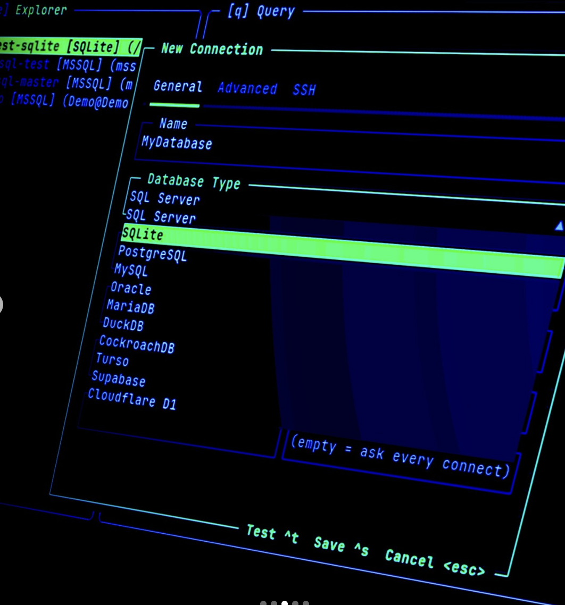

One platform for medical device reliability
Monitor device performance
Track high-risk devices, failures, maintenance cost, and dashboard analytics.
Manage medical devices
Store structured device, manufacturer, failure, and maintenance records in MySQL.

Capture operational logs
Store technician notes, event logs, alerts, snapshots, and audit history in MongoDB.